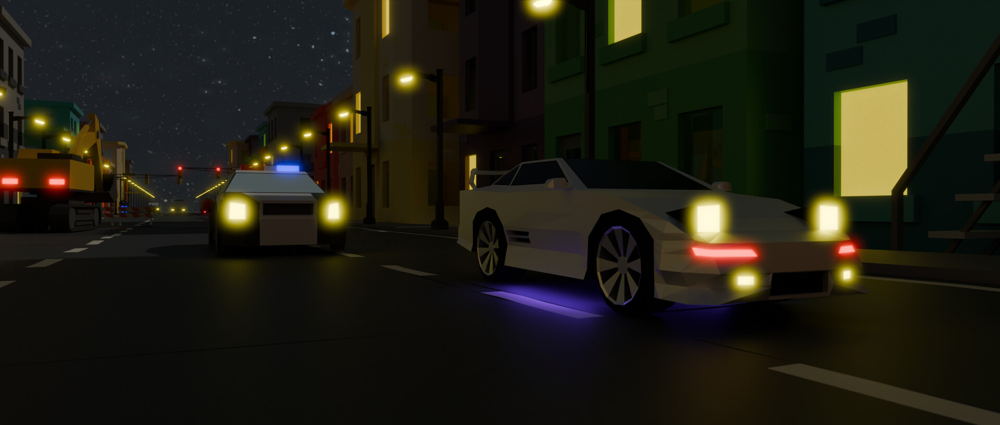
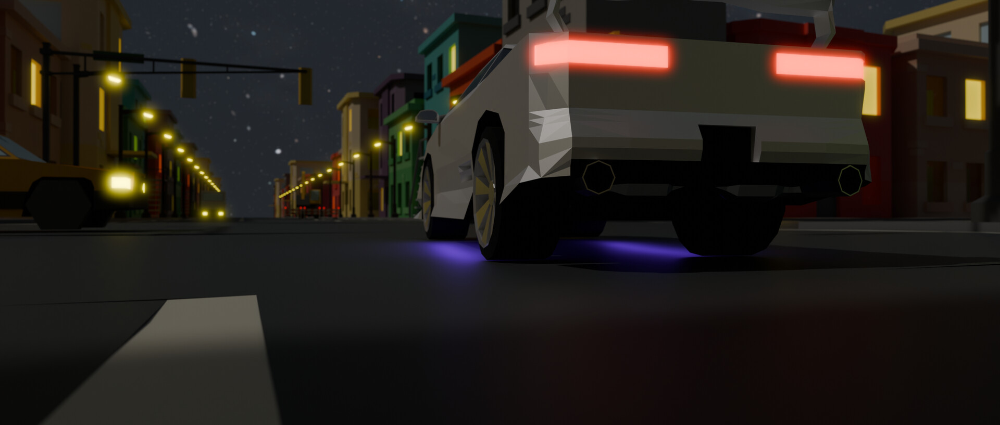

Blender animation
Car Chase Animation
A low-poly animated car chase through a stylized city, created in Blender.
This project focused on staging, motion, timing, and environment design. The low-poly visual style was a deliberate stylistic choice, intended to make the animation feel like an old racing game.
Some city assets used were from Free Low Poly Urban City 3D Asset Pack.
- Source: Sketchfab
- Author: Syoma Pozdeev
- License: CC Attribution
- Modifications: Adjusted textures.

Video
Animation preview
Stills
Scene gallery
